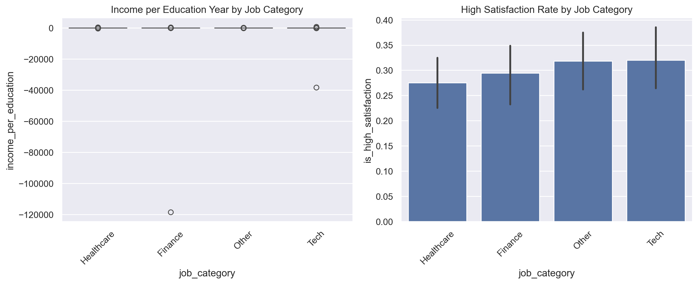

A comprehensive guide to data preprocessing techniques in Python, covering handling missing values, scaling, and feature engineering.
data-science
python
tutorial
machine-learning
Author
Ram Polisetti
Published
March 19, 2024
Data Preprocessing in Python
Data preprocessing is a crucial step in any data science project. In this post, we’ll explore common preprocessing techniques and how to implement them using Python’s popular data science libraries.
Setup and Sample Data
Code
import pandas as pdimport numpy as npfrom sklearn.preprocessing import StandardScaler, LabelEncoderfrom sklearn.impute import SimpleImputerimport matplotlib.pyplot as pltimport seaborn as sns# Set random seed and plot stylenp.random.seed(42)plt.style.use('default')sns.set_theme()# Create sample dataset with common preprocessing challengesn_samples =1000data = {'age': np.random.normal(35, 10, n_samples),'income': np.random.lognormal(10, 1, n_samples),'education_years': np.random.randint(8, 22, n_samples),'job_category': np.random.choice(['Tech', 'Finance', 'Healthcare', 'Other'], n_samples),'satisfaction_score': np.random.randint(1, 11, n_samples)}# Add some missing valuesdf = pd.DataFrame(data)df.loc[np.random.choice(n_samples, 100), 'income'] = np.nandf.loc[np.random.choice(n_samples, 50), 'education_years'] = np.nandf.loc[np.random.choice(n_samples, 30), 'job_category'] = np.nan# Display initial data infoprint("Initial Dataset Info:")print(df.info())print("\nMissing Values:")print(df.isnull().sum())
# Create new featuresdf_clean['income_per_education'] = np.exp(df_clean['income']) / (df_clean['education_years'] +1) # Add 1 to avoid division by zerodf_clean['is_high_satisfaction'] = (df_clean['satisfaction_score'] >=8).astype(int)# Visualize engineered featuresplt.figure(figsize=(12, 5))plt.subplot(1, 2, 1)sns.boxplot(data=df_clean, x='job_category', y='income_per_education')plt.title('Income per Education Year by Job Category')plt.xticks(rotation=45)plt.subplot(1, 2, 2)sns.barplot(data=df_clean, x='job_category', y='is_high_satisfaction')plt.title('High Satisfaction Rate by Job Category')plt.xticks(rotation=45)plt.tight_layout()plt.show()

Key Takeaways
In this tutorial, we learned essential data preprocessing techniques:
Handling missing values using imputation
Scaling numeric features
Encoding categorical variables
Creating new features through feature engineering
These techniques are crucial for preparing your data for machine learning models. In future posts, we’ll explore: - Advanced feature engineering techniques - Handling imbalanced datasets - Dealing with outliers - Automated feature selection